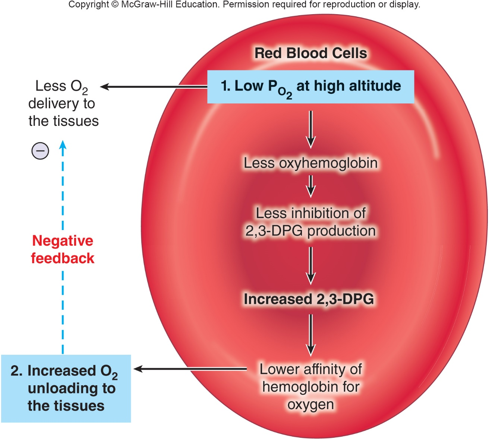

- 2,3-DPG Alters Affinity of Hb for O2
- 2,3-diphosphoglycerate or 2,3 bisphosphoglycerate (2,3-BPG)
- Metabolic by-product of glycolysis in RBCs.
- O2 inhibits its production.
- 2,3-DPG binds Hb -> decrease in affinity for O2 -> right shift where more O2 is released in tissues.
- 2,3-DPG production ↑ with hypoxemic conditions
- Anemia
- High altitudes
- Some forms of chronic lung disease
